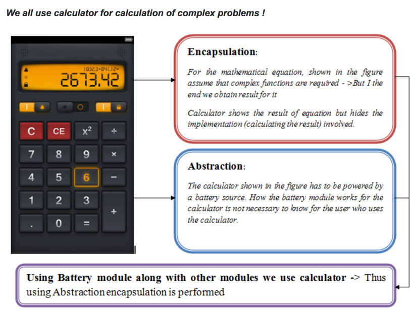
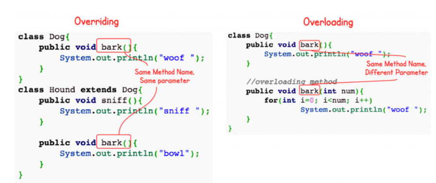

May 23, 2018 at 12:35 PM
Contents
What is Object-Oriented Programming?
OOP is a programming style in which a program is split into self-contained objects, with each object representing different parts of the program and contains its own data and logic. These objects interact with each other to form the program as a whole.
You might be wondering what I mean by an object. An object is anything with a state and behavior. Real-world objects share these characteristics. For example, dogs have state (name, color, breed, hungry) and behavior (barking, fetching, wagging tail). In programming, an object stores its state in variables and exposes its behavior through methods.
Here are some of the benefits of OOP:
The Four Main Principles
OOP has four main principles. They are inheritance, encapsulation, abstraction, and polymorphism.
1) Inheritance – When classes inherit commonly used variables and methods from other classes. E.g. Animals includes subclasses dog and cat.
Pros: reusability, extensibility, data hiding. Cons: classes (base and inherited) gets tightly coupled and so isn’t independent.
2) Encapsulation - used to refer to two notions.
Encapsulation of Data – process of encapsulating variables and methods together in a unit. Variables of a class will be hidden from other classes depending on which access modifiers are used – know as data hiding. Each class in Java is an example of encapsulation.
Restricting access to object’s components - variables of a class will be hidden from other classes by making variables private, and can be accessed only through the methods of their current class. Setter and getter method used to update the private variables via public methods. Allows for data hiding because protects variable from outside world.
Pros: allows for data hiding, can make class read-only or write-only by providing setter and getter methods, also, provides you control over the data because you set the values through setter and getters methods.
3) Abstraction – Process of hiding implementation details from user, only functionality will be provided to user. In that way, user will only have info on what object does instead of how it does it.
Pros: makes code more readable and simple since complexity is hidden, easier to maintain code since program is very complex without abstraction.
The following picture illustrates the use of encapsulation and abstraction.
4) Polymorphism – Allows us to process objects differently based on their data type. Two types: Compile time polymorphism (static binding) and Runtime polymorphism (dynamic binding). Method overloading is an example of static polymorphism, while method overriding is an example of dynamic polymorphism. Static polymorphism in Java is achieved by method overloading. Dynamic polymorphism in Java is achieved by method overriding. Overriding is run-time while overloading is compile-time. 
Further Reading
Two important concepts that rely on OOPs is abstract and interface. I'm not going to go in detail about it, but I recommend taking a look at these links: java-abstract-class-method, abstract-method-with-examples-in-java, java-interface.